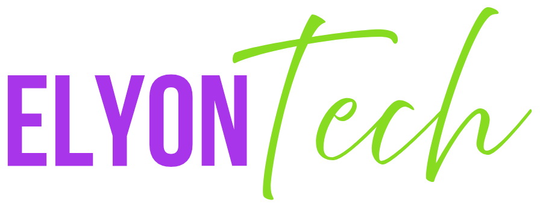

ElyonTech est une école professionnelle spécialisée dans la formation en technologies de l'information et en informatique. C’est un centre éducatif moderne qui offre des formations pratiques et adaptées aux besoins du marché du travail, permettant aux apprenants d’acquérir des compétences concrètes pour entrer rapidement dans le monde professionnel ou pour améliorer leurs qualifications.
L’école met l’accent sur une pédagogie orientée vers la pratique, avec des cours interactifs, des projets réels, et un accompagnement personnalisé. Les formations sont conçues pour convenir aussi bien aux débutants qu’aux personnes souhaitant se perfectionner ou se reconvertir dans le domaine informatique.
Offrir des compétences techniques solides en informatique. Préparer les étudiants à des emplois spécialisés dans le secteur technologique. Favoriser l’insertion professionnelle rapide grâce à des cours pratiques. Encourager l’autonomie et la créativité de chaque apprenant.
Introduction à l’ordinateur.
Utilisation du système d’exploitation (Windows/Linux).
Initiation à Internet et au courrier électronique.
Pour les débutants ou ceux qui veulent renforcer leurs bases.
L’école met l’accent sur une pédagogie orientée vers la pratique, avec des cours interactifs, des projets réels, et un accompagnement personnalisé. Les formations sont conçues pour convenir aussi bien aux débutants qu’aux personnes souhaitant se perfectionner ou se reconvertir dans le domaine informatique.